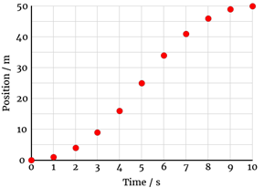

Position-Time Graphs
Here is the diagram for the motion of a bike that we used as an example in the last lesson:

Motion of a Bicycle
| Time \(t\) / s | Position \(\Delta{\vec{\mathbf d}}\) / m |
| 0.0 | –5.0 |
| 1.0 | –2.0 |
| 2.0 | +1.0 |
| 3.0 | +4.0 |
| 4.0 | +7.0 |
This is an example of uniform motion, because the bike is always moving through the same displacement in the same amount of time (+3.0 metres every 1.0 seconds.)
- When we graph the \({\vec{\mathbf d}}\mathrm{-}t\) data for uniform motion, it will be a straight line:

Velocity
- When we calculate the velocity of the bike, we are actually calculating the slope of the line:$${\vec{\mathbf v}} = {\Delta{\vec{\mathbf d}} \over \Delta t} = {\mathrm{{+12.0\ m \over 4.0\ s} = 3.0\ m/s}}$$
- The displacement \(\Delta{\vec{\mathbf d}}\) is the “rise” of the graph (from –5.0 to +7.0 m), and the time \(\Delta t\) is the “run” (from 0.0 to 4.0 seconds).
- Because the line is straight, the slope (velocity) is the same no matter which points on the line we use to calculate it: the bike’s velocity is constant.
Interpreting the Graph
Knowing that slope represents the velocity, we can interpret this and other motion graphs as follows.
- Upward slope means forward motion (positive velocity); downward slope means reverse motion (negative velocity).
- Steep sections of a graph indicate a fast velocity; shallow segments indicate a slower velocity.
- Straight segments of the graph have constant velocity.
- Horizontal (flat) segments indicate an object at rest (\(\vec{\mathbf v}\) = 0).
- Curved parts of the graph indicate that the velocity is changing; this is called accelerated motion.
Motion of an Elevator

- If the graph curves in such a way as to get steeper with time, the object is speeding up; the graph will get flatter over time when the object is slowing down.
- The instantaneous velocity means the slope at a single point in time.
- You can estimate the instantaneous velocity by calculating the slope between two consecutive data points.
- The average velocity means the slope calculate between two points that are relatively far apart in time.
Velocity-Time Graphs
Sometimes we will have data collected for an object’s velocity rather than its position.

- For uniform motion, the \(\vec{\mathrm v}\)-\(t\) graph must be horizontal.
- A sloped graph (linear or curved) indicates accelerated motion.
- The area under any section of the graph indicates the object’s displacment during that time interval.